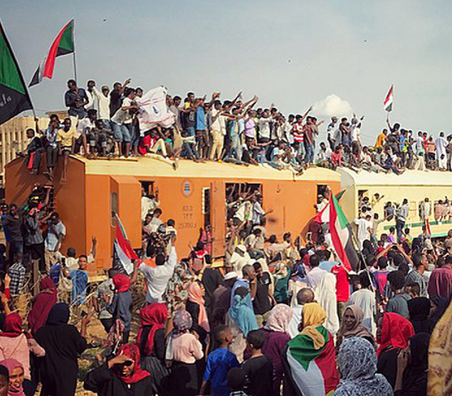

Unidad 3

Sudán en la actualidad
Hassan E.T. (2022), “Where Is Sudan? Refracting the Globe through Bilad al-Dahab”, New Socialist.Ensayo de análisis político sobre Sudán en el contexto post-Bashir y sus articulaciones regionales y globales.